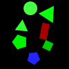
(1)
A green ellipse is closer to an ellipse than the green rectangle.
A green rectangle is above a green shape.
A gray shape is farther from an ellipse than the green rectangle.
A green ellipse is farther from a gray shape than the rectangle.
A blue shape is to the left of an ellipse.
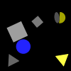
(2)
A gray triangle is below a triangle.
A blue ellipse is farther from a gray shape than the blue triangle.
A green triangle is behind a rectangle.
A blue shape is below a cyan shape.
A gray rectangle is behind a green shape.
(3)
A red shape is above a red cross.
A red circle is below a cyan cross.
A blue triangle is behind a cyan shape.
A red triangle is above a cross.
A circle is behind a triangle.
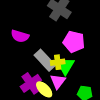
(4)
A blue shape is above a gray shape.
A cross is below a blue shape.
A gray square is to the left of a blue pentagon.
A cyan shape is to the left of a gray shape.
A cyan square is farther from a green shape than the cross.
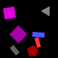
(5)
A gray rectangle is to the right of a cross.
A yellow square is behind a red shape.
A gray shape is below a triangle.
A red shape is to the left of a yellow square.
A blue shape is below a red circle.
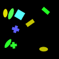
(6)
A cyan shape is closer to a triangle than the blue square.
A square is above a gray cross.
A red shape is to the left of a gray semicircle.
A circle is to the left of a magenta shape.
A blue shape is above a cross.
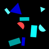
(7)
A green shape is behind a gray cross.
A gray square is below a rectangle.
A cross is to the left of a gray rectangle.
A green square is below a blue cross.
A gray cross is behind a cyan shape.
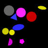
(8)
A triangle is to the left of a green pentagon.
A gray pentagon is to the right of a green triangle.
A pentagon is to the left of a gray ellipse.
A blue shape is farther from a magenta shape than the cyan shape.
A yellow shape is closer to a green triangle than the yellow pentagon.
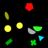
(9)
A green ellipse is in front of a triangle.
A blue pentagon is below a green ellipse.
A pentagon is in front of a green shape.
A green ellipse is closer to a blue triangle than the gray ellipse.
A triangle is to the left of a green pentagon.
(10)
A rectangle is to the right of a green shape.
A blue square is above a cyan ellipse.
A cyan ellipse is closer to a green shape than the rectangle.
A cyan rectangle is to the left of a cyan ellipse.
A cyan shape is closer to a green shape than the rectangle.
(11)
A cyan shape is behind a yellow circle.
A pentagon is farther from a blue cross than the magenta shape.
A pentagon is farther from a green shape than the cyan square.
A green shape is below a blue circle.
A green shape is below a blue circle.
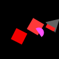
(12)
An ellipse is in front of a blue triangle.
A blue triangle is closer to a gray triangle than the cross.
A green cross is below a gray triangle.
A blue circle is behind a gray triangle.
A green square is to the left of a red rectangle.
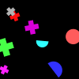
(13)
A green rectangle is farther from a rectangle than the blue shape.
A magenta circle is closer to a yellow rectangle than the square.
A triangle is closer to a magenta shape than the yellow rectangle.
A rectangle is to the left of a circle.
A magenta circle is to the right of a gray shape.
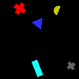
(14)
A pentagon is to the left of a green cross.
A cyan rectangle is closer to a cyan square than the pentagon.
A rectangle is in front of a green cross.
A green cross is farther from a gray shape than the gray circle.
A gray shape is closer to a square than the green shape.
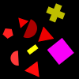
(15)
A red ellipse is above a semicircle.
A magenta triangle is to the left of a square.
A magenta semicircle is farther from a red ellipse than the magenta shape.
A gray semicircle is to the right of a red ellipse.
A red semicircle is to the left of a semicircle.
(16)
A circle is above a yellow shape.
A green shape is to the left of a red shape.
A green circle is to the right of a yellow square.
A green triangle is to the right of a red triangle.
A green ellipse is behind a yellow triangle.
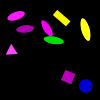
(17)
A cross is closer to a blue cross than the red semicircle.
A rectangle is to the left of a red shape.
A red semicircle is to the right of a rectangle.
A red shape is below an ellipse.
A blue ellipse is closer to a magenta shape than the rectangle.
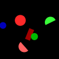
(18)
A blue cross is in front of a gray triangle.
A blue shape is farther from a magenta square than the ellipse.
A blue cross is farther from a gray shape than the blue triangle.
A gray shape is above a cross.
A triangle is farther from a gray shape than the magenta rectangle.
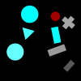
(19)
A circle is farther from a magenta semicircle than the triangle.
A red shape is to the left of a triangle.
A gray shape is above a semicircle.
A green semicircle is farther from a semicircle than the triangle.
A magenta circle is in front of a yellow circle.
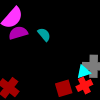
(20)
A pentagon is closer to a yellow square than the triangle.
A red shape is to the right of a green shape.
A green pentagon is farther from a yellow shape than the ellipse.
A red shape is closer to a square than the magenta circle.
A yellow shape is above a green pentagon.

(21)
A red ellipse is farther from a circle than the cross.
A cyan cross is to the left of a rectangle.
A rectangle is below a red shape.
A cyan cross is above a red shape.
A cyan cross is to the right of a red pentagon.
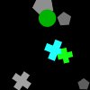
(22)
A gray pentagon is farther from a green shape than the green cross.
A blue pentagon is below a yellow shape.
A green cross is to the right of a rectangle.
A rectangle is to the right of a cross.
A gray shape is above a green cross.
(23)
A yellow shape is to the left of a rectangle.
A cyan circle is farther from a red circle than the green circle.
A red shape is closer to a yellow circle than the blue shape.
A gray circle is above a circle.
A circle is above a magenta circle.
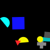
(24)
A magenta square is behind a cyan circle.
A cyan cross is in front of a magenta shape.
A blue cross is above a square.
A magenta circle is in front of a magenta square.
A blue cross is below a green square.
(25)
A blue circle is closer to a green shape than the green circle.
A green semicircle is closer to a green circle than the cross.
A blue semicircle is to the left of a green shape.
A green semicircle is farther from a red semicircle than the yellow shape.
A blue rectangle is to the left of a blue cross.
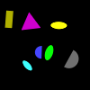
(26)
A cross is behind a magenta pentagon.
A gray ellipse is behind a cyan cross.
A cyan square is farther from a gray square than the magenta pentagon.
A magenta shape is behind a square.
A green shape is farther from a magenta pentagon than the gray shape.
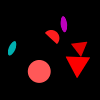
(27)
An ellipse is closer to a rectangle than the blue rectangle.
A red pentagon is closer to a gray shape than the blue shape.
A cross is to the left of a red rectangle.
A blue shape is below a red triangle.
A red pentagon is to the left of a blue rectangle.
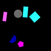
(28)
A blue triangle is below a yellow shape.
A yellow square is to the left of a yellow triangle.
A yellow square is above a yellow triangle.
A blue shape is behind a square.
A blue square is to the left of a yellow square.
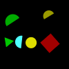
(29)
A cyan shape is to the right of a gray pentagon.
A magenta pentagon is above a yellow shape.
A gray triangle is in front of a magenta shape.
A red circle is farther from a pentagon than the gray triangle.
A magenta shape is in front of a gray shape.
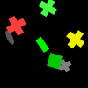
(30)
An ellipse is below a red shape.
A pentagon is behind a pentagon.
A cyan shape is in front of a pentagon.
A triangle is to the left of a cross.
A yellow shape is closer to a magenta cross than the triangle.
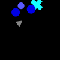
(31)
A red semicircle is to the left of a gray semicircle.
A pentagon is above a red shape.
A cyan semicircle is to the left of a gray semicircle.
A cyan triangle is above a gray shape.
A square is behind a red shape.
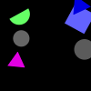
(32)
A blue shape is in front of an ellipse.
A cyan shape is farther from a cyan circle than the square.
A magenta shape is to the right of an ellipse.
A magenta square is below a blue shape.
A cyan shape is to the right of a blue ellipse.
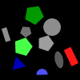
(33)
A gray triangle is farther from a cyan pentagon than the yellow pentagon.
A yellow shape is behind a magenta shape.
A magenta pentagon is behind a yellow rectangle.
A magenta pentagon is closer to a pentagon than the gray shape.
An ellipse is to the left of a rectangle.
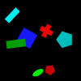
(34)
A rectangle is farther from a gray square than the gray pentagon.
A pentagon is to the left of a green shape.
A pentagon is closer to a yellow cross than the green rectangle.
A gray semicircle is in front of a cross.
A pentagon is closer to a gray square than the green shape.
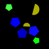
(35)
A semicircle is farther from a magenta shape than the yellow pentagon.
A blue semicircle is to the right of a green rectangle.
A rectangle is to the left of a pentagon.
A pentagon is to the right of a yellow pentagon.
A green semicircle is farther from a yellow shape than the blue shape.
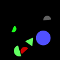
(36)
A gray shape is behind a pentagon.
A gray pentagon is behind a green pentagon.
A triangle is behind a green pentagon.
A magenta shape is in front of a pentagon.
A gray pentagon is above a green ellipse.
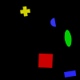
(37)
A magenta ellipse is to the right of a cyan circle.
A red ellipse is in front of a cyan ellipse.
An ellipse is behind a cyan circle.
A cyan shape is behind a red shape.
A green square is closer to a green semicircle than the red shape.
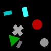
(38)
A blue ellipse is farther from a pentagon than the green shape.
A green cross is farther from a blue cross than the yellow pentagon.
A cyan pentagon is below a blue triangle.
A blue shape is farther from a yellow pentagon than the green shape.
A blue ellipse is farther from a cyan pentagon than the green cross.
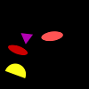
(39)
A cyan square is behind a square.
A yellow square is below a pentagon.
A red shape is in front of a square.
A gray square is behind a red square.
A cyan pentagon is to the right of a red square.
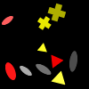
(40)
A red shape is below a yellow circle.
A yellow circle is above a green triangle.
A yellow ellipse is to the right of a green shape.
A yellow cross is farther from a red shape than the rectangle.
A circle is closer to a red ellipse than the yellow cross.
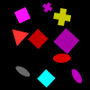
(41)
A gray pentagon is below an ellipse.
A red cross is to the right of a blue cross.
A red semicircle is closer to a magenta cross than the magenta shape.
A circle is below a magenta ellipse.
An ellipse is farther from a cross than the magenta ellipse.
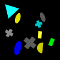
(42)
A cross is to the right of a magenta square.
A red square is below a square.
An ellipse is farther from a triangle than the semicircle.
A magenta square is to the right of a yellow semicircle.
A cyan shape is behind a green triangle.
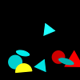
(43)
A red triangle is above a green rectangle.
A gray shape is closer to a blue circle than the pentagon.
A cyan pentagon is in front of a green shape.
A green shape is behind a blue circle.
A cross is to the right of a cyan pentagon.
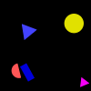
(44)
A yellow semicircle is behind a gray shape.
A cyan shape is closer to a square than the pentagon.
A yellow shape is in front of a gray ellipse.
A yellow pentagon is farther from a magenta pentagon than the gray rectangle.
A yellow semicircle is in front of a magenta shape.
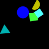
(45)
A gray shape is above a circle.
A square is above a red semicircle.
A magenta pentagon is to the left of a circle.
A red shape is closer to a square than the magenta shape.
A gray circle is to the right of a blue shape.
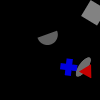
(46)
A magenta circle is farther from a magenta shape than the magenta ellipse.
A green ellipse is above a magenta shape.
A magenta pentagon is to the left of a red cross.
A yellow rectangle is above a circle.
A circle is behind a magenta shape.
(47)
A yellow pentagon is to the left of a magenta circle.
A blue shape is above a yellow shape.
A yellow triangle is to the right of a magenta shape.
A yellow shape is to the left of a circle.
A yellow circle is to the right of a magenta triangle.
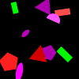
(48)
A gray shape is farther from a magenta shape than the blue shape.
A magenta cross is above a gray triangle.
A yellow shape is above a gray triangle.
A semicircle is to the right of a rectangle.
A magenta ellipse is to the left of a magenta cross.
(49)
A cross is farther from a square than the cyan shape.
A yellow shape is to the left of a blue shape.
A square is to the left of a yellow square.
A magenta shape is below a gray square.
A gray square is farther from a square than the yellow square.
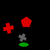
(50)
A magenta shape is below a rectangle.
A green shape is below a cyan rectangle.
A cyan rectangle is above a blue circle.
A yellow circle is to the right of a yellow rectangle.
A blue rectangle is above a circle.
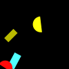
(51)
A blue shape is closer to a magenta pentagon than the magenta triangle.
A green circle is farther from a magenta shape than the triangle.
A magenta triangle is to the right of a blue pentagon.
A blue circle is to the left of a pentagon.
A blue pentagon is farther from a gray circle than the green circle.
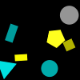
(52)
A magenta circle is closer to a blue cross than the red circle.
A blue semicircle is to the left of a gray triangle.
A magenta circle is farther from a rectangle than the semicircle.
A triangle is below a circle.
A blue semicircle is behind a gray triangle.
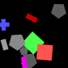
(53)
A cross is to the right of a pentagon.
A gray shape is below a magenta cross.
A cyan cross is below a magenta circle.
A red cross is below a triangle.
A magenta circle is above a magenta pentagon.
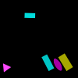
(54)
A red pentagon is to the left of a red cross.
A red semicircle is below a red cross.
A red cross is to the left of a red pentagon.
A red shape is closer to a yellow circle than the green shape.
A green pentagon is above a red cross.
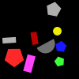
(55)
A blue cross is above a blue cross.
A blue cross is to the right of a yellow pentagon.
A blue cross is above a green shape.
A cross is above a pentagon.
A pentagon is above a blue shape.
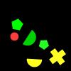
(56)
A red ellipse is farther from a cyan circle than the magenta ellipse.
A circle is to the right of a red shape.
An ellipse is to the left of a green rectangle.
A green rectangle is below an ellipse.
A rectangle is above an ellipse.
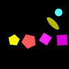
(57)
A yellow circle is in front of a red square.
A red cross is in front of a blue shape.
A semicircle is below a cross.
A semicircle is to the right of a yellow circle.
A green shape is to the right of a red semicircle.
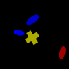
(58)
A blue semicircle is above a gray circle.
A gray triangle is above a gray shape.
A green semicircle is above a gray circle.
A cyan cross is closer to a gray triangle than the gray circle.
A pentagon is in front of a green shape.
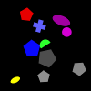
(59)
A magenta circle is closer to a blue ellipse than the cyan shape.
A blue circle is in front of a circle.
A circle is to the left of a magenta circle.
A blue shape is to the left of a blue shape.
A blue pentagon is to the left of a magenta circle.
(60)
A rectangle is farther from a red shape than the ellipse.
A red shape is behind a magenta shape.
A magenta triangle is in front of a red triangle.
A green shape is farther from a red ellipse than the red triangle.
A magenta triangle is in front of a pentagon.

(61)
A triangle is to the right of a magenta triangle.
A square is to the left of a triangle.
A green square is below a magenta triangle.
A magenta triangle is to the right of a magenta shape.
A magenta shape is above a green square.
(62)
A triangle is to the right of an ellipse.
A cyan triangle is above a blue ellipse.
A yellow shape is below a blue shape.
A yellow shape is to the left of a cyan triangle.
A blue ellipse is below a cyan triangle.
(63)
A red shape is above a green shape.
A green square is above a gray shape.
A square is above a green circle.
A semicircle is farther from a green shape than the green circle.
A gray shape is in front of a green shape.
(64)
A cyan rectangle is closer to a cross than the pentagon.
A cyan rectangle is above a gray pentagon.
A red semicircle is farther from a cyan shape than the cyan semicircle.
A red pentagon is above a cross.
A triangle is below a rectangle.
(65)
A triangle is farther from a magenta shape than the gray cross.
A triangle is farther from a blue square than the gray cross.
A blue shape is to the left of a magenta cross.
A yellow triangle is closer to a cross than the magenta shape.
A blue square is below a gray shape.
(66)
A gray shape is closer to a red rectangle than the triangle.
An ellipse is above a gray ellipse.
A pentagon is farther from a magenta ellipse than the cyan shape.
An ellipse is to the left of a magenta shape.
A magenta ellipse is to the right of a green shape.
(67)
A red rectangle is behind a gray shape.
A gray shape is below a red rectangle.
A rectangle is behind a red shape.
A magenta square is to the right of a gray shape.
A green rectangle is below a red rectangle.
(68)
A triangle is closer to a yellow shape than the blue pentagon.
A red shape is farther from a pentagon than the magenta pentagon.
A red pentagon is above a red square.
A yellow pentagon is to the right of a red pentagon.
A green shape is below a pentagon.
(69)
A cyan ellipse is to the right of an ellipse.
A magenta ellipse is closer to a cyan ellipse than the green shape.
A circle is farther from a gray shape than the blue semicircle.
A magenta triangle is below a magenta ellipse.
A green ellipse is farther from a blue circle than the triangle.
(70)
A green circle is closer to a circle than the yellow ellipse.
An ellipse is to the right of a green circle.
A yellow ellipse is above a triangle.
A gray shape is closer to a yellow pentagon than the red shape.
A cyan circle is behind a yellow pentagon.
(71)
A cross is above a red rectangle.
A cross is closer to a cyan shape than the triangle.
A blue shape is farther from a red rectangle than the cyan circle.
A cyan shape is closer to a red rectangle than the blue semicircle.
A blue triangle is above a cyan shape.
(72)
A semicircle is below a green semicircle.
A green semicircle is farther from a yellow triangle than the red shape.
A red shape is above a green shape.
A green semicircle is above a gray semicircle.
A triangle is closer to a yellow shape than the square.
(73)
An ellipse is farther from a green circle than the magenta circle.
A green triangle is below a magenta shape.
A green semicircle is behind a gray shape.
A magenta shape is above a green semicircle.
A gray circle is above a green semicircle.
(74)
A blue shape is in front of a blue cross.
A blue shape is to the left of a gray cross.
A cross is below a blue shape.
A triangle is closer to a blue semicircle than the blue rectangle.
A pentagon is farther from a blue shape than the blue semicircle.
(75)
A gray shape is farther from a circle than the yellow circle.
A cyan ellipse is closer to a magenta shape than the gray circle.
A yellow circle is to the left of a yellow semicircle.
A yellow rectangle is to the right of a yellow shape.
A magenta rectangle is below a yellow shape.
(76)
A square is behind a blue shape.
A blue semicircle is in front of a blue square.
A magenta square is in front of a blue shape.
A yellow rectangle is below a square.
A yellow rectangle is below a green ellipse.
(77)
A magenta shape is to the left of a square.
A gray shape is above a cyan shape.
A circle is behind a green rectangle.
A cyan shape is above a green shape.
A cyan triangle is farther from a yellow square than the semicircle.
(78)
A circle is to the right of a blue rectangle.
A gray square is above a gray semicircle.
A green semicircle is farther from a gray shape than the yellow shape.
A green shape is below a rectangle.
A gray ellipse is below a rectangle.
(79)
A gray circle is farther from a green shape than the red circle.
A circle is farther from a gray circle than the blue shape.
A green shape is farther from a blue ellipse than the yellow ellipse.
A blue ellipse is below a green circle.
A gray circle is in front of an ellipse.

(80)
A green triangle is behind a cyan shape.
A yellow triangle is to the left of a green triangle.
A magenta circle is below a green shape.
A yellow triangle is to the left of a cyan semicircle.
A green triangle is in front of a magenta circle.
(81)
A semicircle is behind a rectangle.
A rectangle is in front of a red shape.
A red semicircle is farther from a rectangle than the cyan shape.
A red triangle is to the left of a yellow rectangle.
A semicircle is to the right of a red rectangle.
(82)
A red semicircle is in front of a yellow rectangle.
A yellow rectangle is closer to a gray rectangle than the red semicircle.
A gray rectangle is below a rectangle.
A square is above a yellow rectangle.
A yellow rectangle is to the right of a magenta ellipse.
(83)
A blue square is above a square.
A magenta shape is farther from a rectangle than the blue shape.
A cyan shape is to the left of a yellow square.
A gray rectangle is closer to a red shape than the green square.
A blue shape is closer to a gray rectangle than the cyan shape.
(84)
A cyan square is behind a magenta cross.
A rectangle is to the left of a magenta cross.
An ellipse is below a magenta shape.
A magenta cross is in front of a rectangle.
A green shape is above a magenta ellipse.
(85)
A blue shape is behind a red shape.
A blue square is behind a cross.
A cyan triangle is closer to a rectangle than the green rectangle.
A yellow shape is behind a red shape.
A magenta square is above a yellow square.
(86)
A yellow shape is above a blue square.
A red shape is farther from a semicircle than the yellow semicircle.
A blue square is to the left of a yellow semicircle.
A green square is behind a red semicircle.
A square is above a gray cross.
(87)
A gray triangle is above a cross.
A semicircle is to the left of a yellow cross.
A red ellipse is to the left of a yellow cross.
A cross is below a yellow semicircle.
A yellow cross is to the right of a yellow semicircle.
(88)
A blue shape is to the left of a magenta pentagon.
A green shape is to the left of a blue shape.
A yellow cross is farther from a magenta shape than the triangle.
A green ellipse is below a blue ellipse.
A blue circle is farther from a magenta triangle than the yellow shape.
(89)
A square is closer to a magenta cross than the circle.
A green square is to the right of a red cross.
A blue shape is closer to a green square than the red triangle.
A green square is behind a magenta cross.
A magenta shape is to the right of a blue square.
(90)
A cross is to the right of a magenta shape.
A circle is closer to a yellow shape than the blue square.
A green square is above a blue square.
A red cross is to the right of a magenta square.
A square is behind a green shape.
(91)
A circle is closer to a blue shape than the gray semicircle.
A cyan shape is below a circle.
A triangle is to the right of a cyan shape.
A yellow circle is to the left of a cyan pentagon.
A green cross is above a pentagon.
(92)
A cyan circle is in front of a magenta cross.
A magenta shape is in front of a cyan circle.
A cyan circle is farther from a red cross than the red semicircle.
A magenta cross is in front of a cyan circle.
A cross is closer to a red circle than the blue rectangle.
(93)
A red shape is farther from an ellipse than the yellow semicircle.
A red square is to the right of an ellipse.
A green semicircle is above a triangle.
A green cross is behind a red ellipse.
A red shape is closer to a semicircle than the green semicircle.
(94)
A magenta shape is below a cyan rectangle.
A blue rectangle is to the right of a magenta triangle.
A magenta cross is to the left of a rectangle.
A gray rectangle is above a rectangle.
A cyan rectangle is above a blue shape.

(95)
A cyan rectangle is behind a green shape.
A rectangle is farther from a green semicircle than the ellipse.
A square is in front of a semicircle.
A red ellipse is closer to a blue square than the red square.
A cyan square is to the left of a blue shape.
(96)
A yellow rectangle is closer to a magenta rectangle than the cyan rectangle.
A magenta shape is closer to a cyan shape than the cross.
A cross is below a cyan rectangle.
An ellipse is closer to a magenta rectangle than the red shape.
A yellow shape is to the right of a rectangle.
(97)
A gray shape is to the right of a pentagon.
A cyan ellipse is behind a gray shape.
A pentagon is in front of a gray shape.
A red circle is to the right of a yellow pentagon.
A cross is farther from a gray shape than the magenta square.
(98)
A semicircle is in front of a cross.
A red triangle is farther from a magenta triangle than the blue cross.
A magenta triangle is below a blue cross.
A triangle is closer to a magenta triangle than the cross.
A green shape is below a triangle.
(99)
A blue circle is behind a yellow semicircle.
A pentagon is to the left of a semicircle.
A circle is behind a yellow shape.
A cyan triangle is below a red shape.
A magenta shape is above a yellow shape.
(100)
A red square is below a gray circle.
A gray rectangle is to the left of a green shape.
A cyan shape is to the left of a red square.
A green circle is farther from a rectangle than the red circle.
An ellipse is above a cyan rectangle.